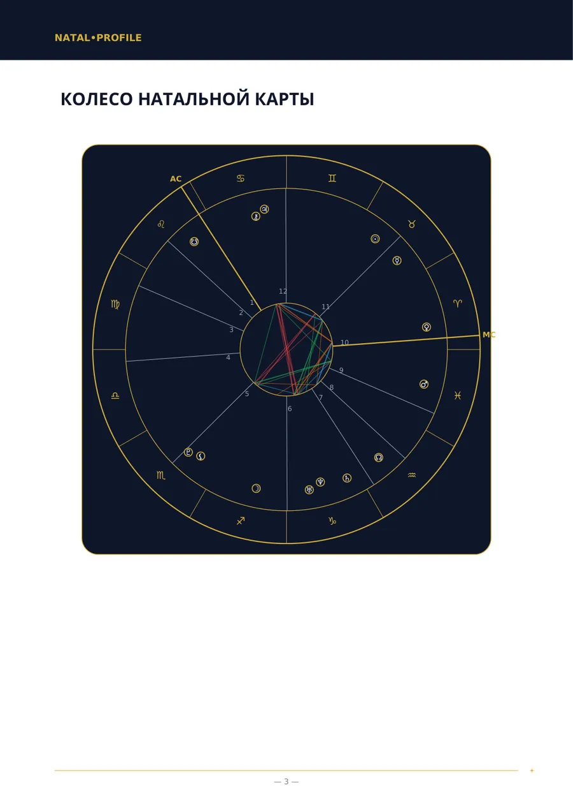
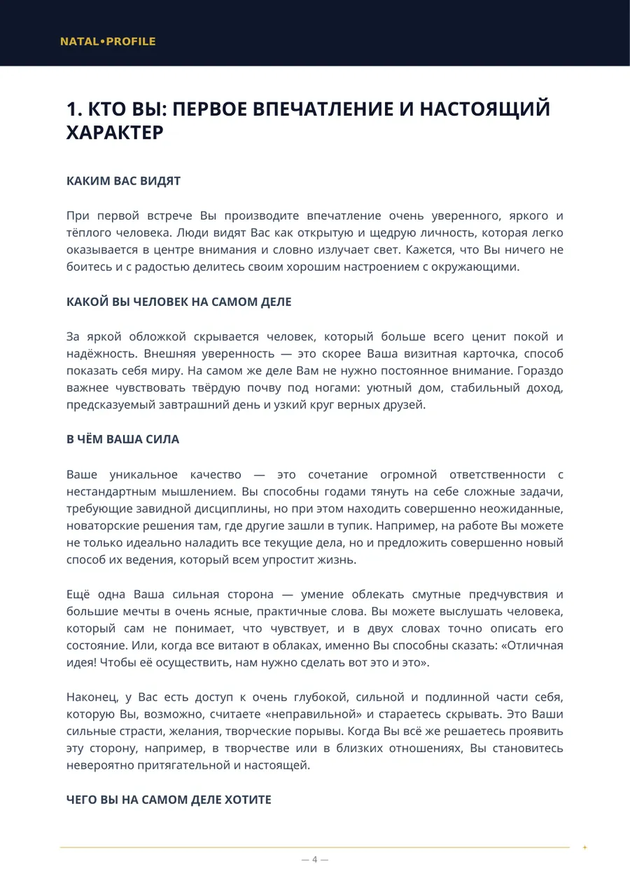
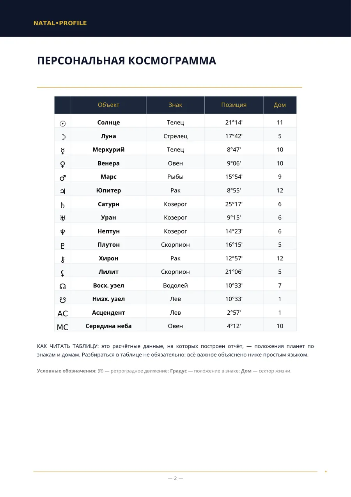
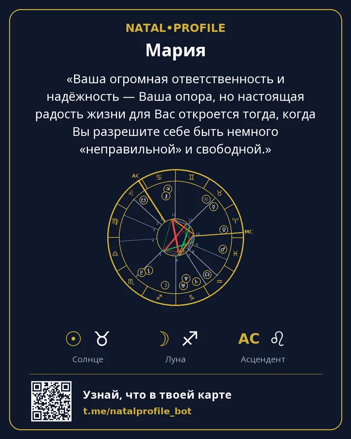

👶 Детская карта — инструкция к вашему ребёнку
Что нужно вашему ребёнку для спокойствия и в чём его поддержать.
- 250 ⭐ звёзд Telegram
- 7 глав
Что внутри
- Что вашему ребёнку нужно для спокойствия
- Силы и подвижность
- Характер и интересы
- Как ребёнок думает и учится
- Вкус и творчество
- Правила и запреты
- В чём поддержать ребёнка
Кому подойдёт
- Родители, которые хотят лучше понимать ребёнка.
- Когда непонятно, как ребёнок реагирует на правила и запреты.
- Подойдёт для ребёнка любого возраста.
Что нужно ввести
Имя, пол, дата, время и город рождения ребёнка.
Пример страниц
Настоящие страницы отчёта «Натальная карта». Это пример: данные рождения вымышленные.




Другие отчёты
Натальная карта (полный анализ)
Полный разбор характера по дате, времени и месту рождения.
250 ⭐9 глав · Подробнее →
Натальная карта (базовый анализ)
Разбор характера, когда время рождения неизвестно.
150 ⭐6 глав · Подробнее →
Анализ совместимости (полный разбор)
Двое: что притянуло, где спорите и что даёте друг другу.
250 ⭐6 глав · Подробнее →
Анализ совместимости (базовый разбор)
Совместимость характеров, когда время рождения неизвестно.
150 ⭐5 глав · Подробнее →